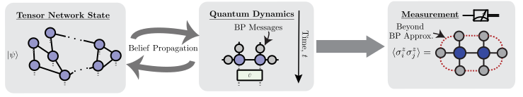

TensorNetworkQuantumSimulator.jl
A Julia package for simulating quantum circuits, quantum dynamics and equilibrium physics with tensor networks of near-arbitrary geometry. Built on top of ITensors.jl and NamedGraphs.jl.

Features
- Tensor Networks of Arbitrary Geometry: 2D and 3D lattices (square, hexagonal, heavy-hex, Lieb, cubic), trees, and custom graphs via NamedGraphs.jl.
- Custom Site Types: Multiple spin and bosonic modes per tensor, with complete flexibility over where physical degrees of freedom live in the network.
- Gate Application: Apply large circuits with full control over SVD truncation via the simple update algorithm with BP-computed environments. Fast, simple, and robust. Full update with boundary MPS environments is also supported for planar graphs. Both real-time and imaginary-time evolution are supported.
- Expectation Values: Belief propagation, boundary MPS, and exact contraction backends for computing expectation values of multi-point observables.
- Entanglement Entropy: Von Neumann and Rényi entropies from BP messages (per bond) or from reduced density matrices (per subsystem).
- Sampling: Sample from planar tensor network states using boundary MPS, with the MPS bond dimension controlling sample quality. Options to compute the importance-sampling ratio $p(x)/q(x)$ for direct sample quality certification.
- Operators: Operator evolution in the Heisenberg picture and density matrix representation.
- GPU Support: GPU acceleration via CUDA.jl or Metal.jl. CUDA.jl is highly recommended for large bond dimension simulations, where it can provide dramatic speedups.
- Arbitrary Precision:
Float32,Float64,ComplexF32,ComplexF64, and other numeric types.
Algorithm Overview
| Algorithm | Keyword | Graph Requirement | Cost | Accuracy |
|---|---|---|---|---|
| Belief propagation | alg = "bp" | Any | Low | Exact on trees, approximate on loopy graphs |
| Boundary MPS | alg = "boundarymps" | Planar | Variable (scales cubically in mps_bond_dimension) | Controllably accurate, converges to exact with increasing MPS bond dimension |
| Loop corrections | alg = "loopcorrections" | Any | Moderate | Systematic corrections to BP; accurate when correlations decay exponentially |
| Exact contraction | alg = "exact" | Any (small systems only) | Exponential in system size | Exact |
Installation
julia> using Pkg; Pkg.add("TensorNetworkQuantumSimulator")Documentation Outline
- Getting Started: A complete walkthrough from lattice definition to circuit construction, measurement, and sampling
- Graphs: Defining lattice geometries and graph operations
- Tensor Networks:
TensorNetworkandTensorNetworkStatetypes and their construction - Gate Application: Building circuits and applying gates
- Expectation Values: Computing observables, norms, and overlaps
- Entanglement Entropy: Von Neumann and Rényi entropies via BP and boundary MPS
- Sampling: Drawing bitstring samples from a planar tensor network state with optional certification
- Caches: How the
BeliefPropagationCacheandBoundaryMPSCachework and why they matter - Advanced Topics: GPU support, loop corrections, and precision control
- API Reference: Complete list of documented functions
References
- [Alkabetz2021] N. Alkabetz and I. Arad, "Tensor networks contraction and the belief propagation algorithm," Physical Review Research 3, 023073 (2021). Link
- [Tindall2023] J. Tindall and M. Fishman, "Gauging tensor networks with belief propagation," SciPost Physics 15, 222 (2023). Link
- [Tindall2024] J. Tindall, M. Fishman, E. M. Stoudenmire, and D. Sels, "Efficient Tensor Network Simulation of IBM's Eagle Kicked Ising Experiment," PRX Quantum 5, 010308 (2024). Link
- [Evenbly2026] G. Evenbly, N. Pancotti, A. Milsted, J. Gray, and G. K.-L. Chan, "Loop Series Expansions for Tensor Networks," Physical Review Research 8, 013245 (2026). Link
- [Tindall2025] J. Tindall, A. Mello, M. Fishman, M. Stoudenmire, and D. Sels, "Dynamics of disordered quantum systems with two- and three-dimensional tensor networks," arXiv:2503.05693 (2025). Link
- [Rudolph2025] M. S. Rudolph and J. Tindall, "Simulating and Sampling from Quantum Circuits with 2D Tensor Networks," arXiv:2507.11424 (2025). Link
- [Ferris2021] A. J. Ferris and G. Vidal, "Perfect sampling with unitary tensor networks," Physical Review B 104, 235141 (2021). Link
If you use this library in your research, please cite at minimum either:
- M. S. Rudolph and J. Tindall, "Simulating and Sampling from Quantum Circuits with 2D Tensor Networks," arXiv:2507.11424 (2025). Link
or
- J. Tindall and M. Fishman, "Gauging tensor networks with belief propagation," SciPost Physics 15, 222 (2023). Link